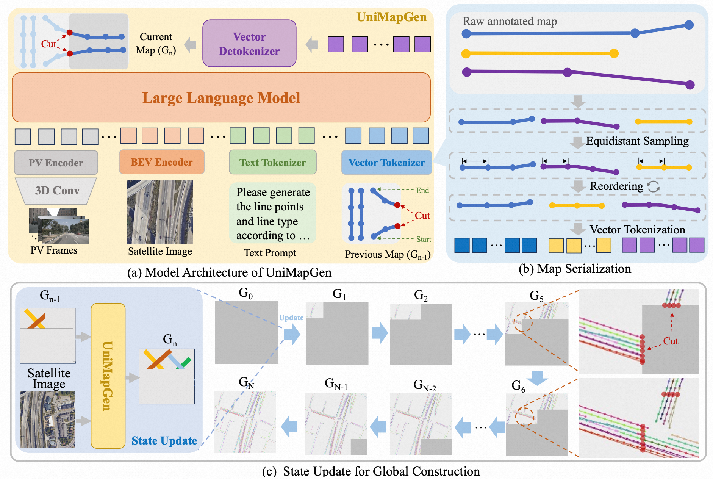
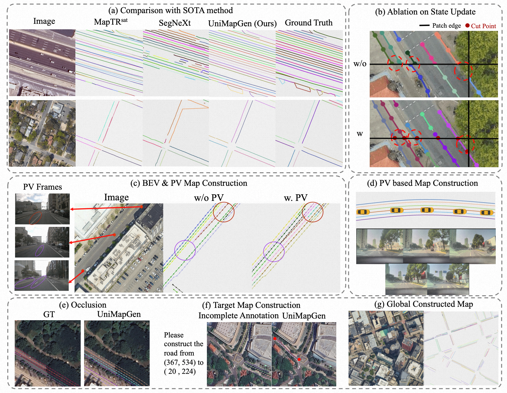
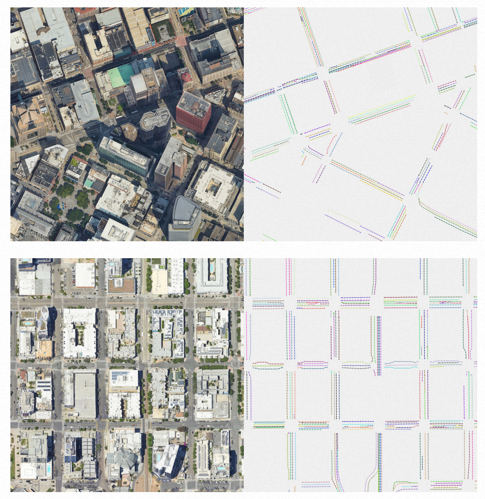
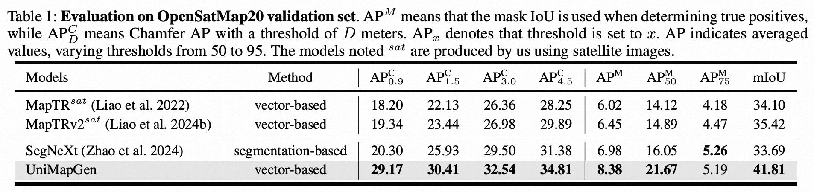

Large-scale map construction is foundational for critical applications such as autonomous driving and navigation systems. Traditional large-scale map construction approaches mainly rely on costly and inefficient special data collection vehicles and labor-intensive annotation processes.
While existing satellite-based methods have demonstrated promising potential in enhancing the efficiency and coverage of map construction, they exhibit two major limitations: (1) inherent drawbacks of satellite data (e.g., occlusions, outdatedness) and (2) inefficient vectorization from perception-based methods, resulting in discontinuous and rough roads that require extensive post-processing.
This paper presents a novel generative framework, UniMapGen, for large-scale map construction, offering three key innovations: (1) representing lane lines as discrete sequence and establishing an iterative strategy to generate more complete and smooth map vectors than traditional perception-based methods. (2) proposing a flexible architecture that supports multi-modal inputs, enabling dynamic selection among BEV, PV, and text prompt, to overcome the drawbacks of satellite data. (3) developing a state update strategy for global continuity and consistency of the constructed large-scale map. UniMapGen achieves state-ofthe-art performance on the OpenSatMap dataset. Furthermore, UniMapGen can infer occluded roads and predict roads missing from dataset annotations.

(a) Model Architecture: UniMapGen supports multi-modal data inputs, including BEV, PV, text, and maps. (b) Map Serialization: we apply equidistant sampling to the raw map vectors, and then reorder them in the specified order. Finally, they are converted into special tokens. (c) State Update: we propose a state update strategy to incrementally construct large-scale maps. This process requires no post-processing, yielding smooth and connected outputs.

Qualitative results of UniMapGen. (a) Comparison with SOTA. Different color refers to different line instances. (b) Ablation on State Update. The black lines are the patch edges. (c) BEV and PV map construction. PV provides up-to-date (purple) and complementary (red) road information. The line with purple circles is worn out or outdated in BEV image but clear in PV frames. (d) PV-based map construction. (e) Occluded road construction even without PV frames. (f) UniMapGen generates target maps given text prompts. (g) Global constructed map (missing intersection due to OpenSatMap annotation).

Qualitative results of UniMapGen on the OpenSatMap dataset. UniMapGen create complete and continuous maps.

@article{yuan2025unimapgen,
title={UniMapGen: A Generative Framework for Large-Scale Map Construction from Multi-modal Data},
author={Yuan, Yujian and Wu, Changjie and Chang, Xinyuan and Wang, Sijin and Zhang, Hang and Liang, Shiyi and Zeng, Shuang and Xu, Mu},
journal={arXiv preprint arXiv:2509.22262},
year={2025}
}